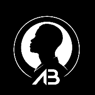

Notes from the workbench.
Short, plain language notes on building software for businesses: security, speed, and choosing the right thing to build.
Loading notes…

Short, plain language notes on building software for businesses: security, speed, and choosing the right thing to build.
Loading notes…